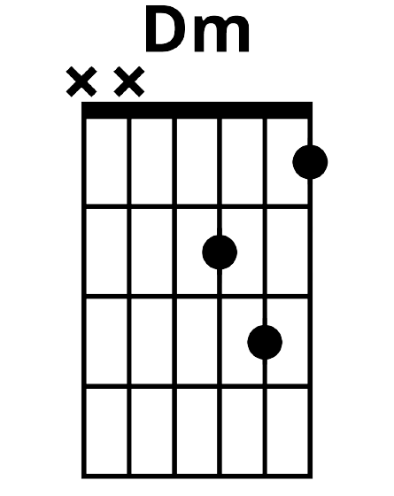

Let's learn the D minor chord today as we will be using it later on. It has a similar shape to the D major chord but with a slight change - one note is slightly lower.

What is a capo? A capo is something you can clamp onto your fretboard between
fret lines to change the pitch of the strings without needing to retune your guitar.
Why would I use a capo? You may need to play a song in a higher pitch to suit
a singer's voice. Alternatively you may need to transpose a song. Say the song you're looking at has a B
minor chord in it, and you don't know this chord, along with D and A. If you transpose this song to have the
chords Am, C and G; you can place the capo on the second fret and play the song now.
Do I need to buy a capo? It's a matter of personal preference. The more serious
you get about playing, the more likely it is that you'll need one. If you don't have one, you can either
transpose the song into a different key or play the chords as written without a capo to practise the chord
shapes.
Let's add a few new songs to our repertoire. You may be asked to play a song or two in a bar, at a friend's
birthday or other events you attend. The crowd you're playing to could like different genres of music. One
person might like country music, another pop music, a third person may prefer metal, and so on. A good
musician should be able to switch between genres in their playing. You may recognise another version of
Sixteen Tons by Tennessee Ernie Ford if you enjoy South Park.
Beyonce - Halo
Beyonce - Sweet Dreams
Jimmy Eat World - The Middle
The Stranglers - Golden Brown
Dolly Parton - Jolene
Merle Travis - Sixteen Tons
Let's train our ears some more. Below is the intro to a popular song. You may recognise this song if you
have watched the Sopranos or are a fan of the show
Glee. Try playing it a few times and then click the tab below to see what the name of the song is.
Hold the first note for a longer period of time than the subsequent notes. Let the last note of each bar
ring out a little longer too.